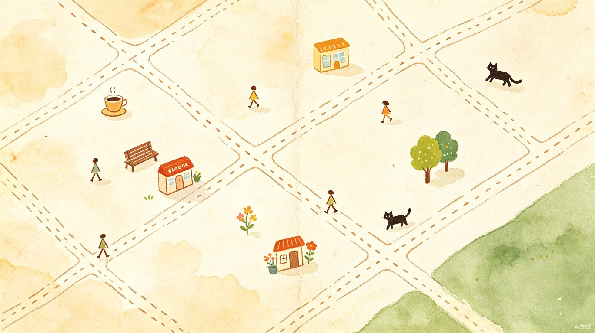
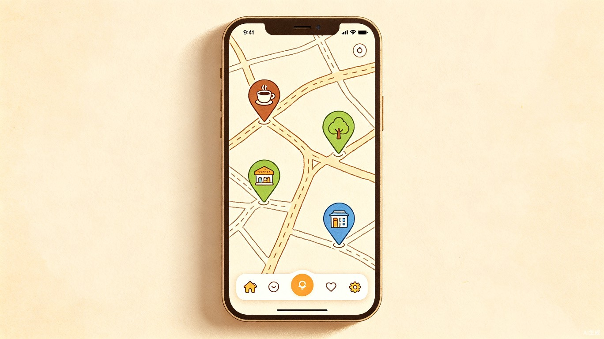
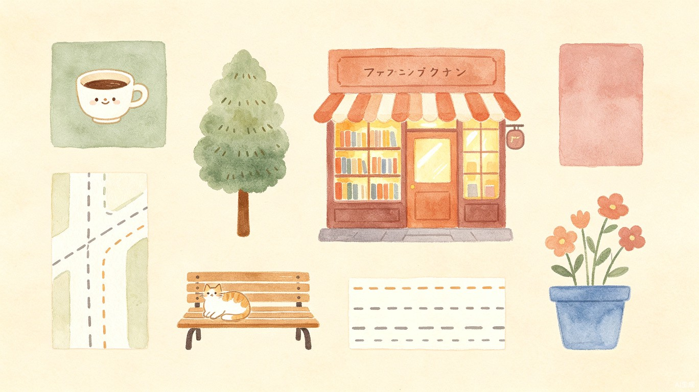
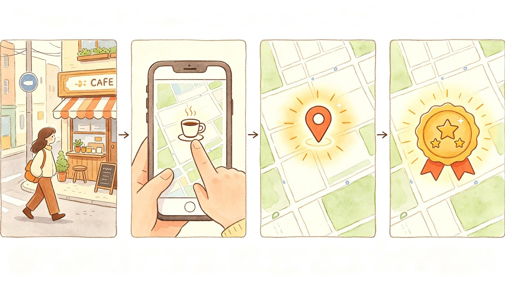

在原子化的城市生活中，重新看见、记录和拥有你的附近。
"现代人只关心自己和宏大的世界，中间的'附近'消失了。" —— 项飙，《把自己作为方法》
在城市生活中，越来越多年轻人感到一种微妙的断裂：每天经过的街道是模糊的，常去的小店没有被记住，眼熟的邻居永远是陌生人。我们与物理空间之间的连接越来越弱，生活半径变得越来越窄——从家到公司的点对点通勤，让城市变成了一串坐标，而非一段段可以感受的风景。
我在北京生活了很长时间，之前老搬家，现在在一个地方住了比较久。一开始没有对"附近"的感知，出门都是打车，每个地点之间都是点对点传输。后来有一次出门散步，观察周围的风景、小店、人，感觉很有趣，像是在"探图"。
通过一次次"探图"，我渐渐构建起了对附近的认知——哪家常去的书店，哪个餐厅好吃，公园的哪个角落是我自我疗愈的自留地。我想要一个工具，帮我重新看见、记录和拥有我的附近。
一款温馨手绘风格的微信小程序——你可以在一个只有基础手绘道路的空白地上，放上你喜欢的咖啡店、常去的公园、眼熟的邻居，像玩游戏一样，一点一点"画"出属于你自己的附近地图。
它不是真实地图那样详细的工具化地图，而是承载你情感与记忆的，只保留与你有情感联结的附近的地图。

系统通过发布"成就"鼓励你进行附近的探索——添加一定数量的地标可以解锁成就称号或者解锁新图标、新场景。你还可以将你的附近地图分享给朋友，邀请朋友进入你的生活，你的世界。
搬家或者换城市后保留旧地图，开启新地图，形成你的城市足迹。
参照《旅行青蛙》《奇妙的收纳》等治愈系产品的视觉语言，「我的街角」采用了暖色调手绘水彩的视觉风格，让每一次打开都像翻开一本手账。



面向22-40岁、生活在家乡以外的地方的年轻人，以独居或合租女性为主。对线上社交感到麻木，想要在现实生活中重建与"附近"的连接，但不知道从哪开始。
每天经过的街道、小店、公园，都是"模糊的存在"，没有被真正看见和记住
想要探索附近，但没有一个工具帮用户"积累"对附近的感知和记忆
现有地图App只有导航和评分，无法承载用户与空间之间的情感记忆
用户不再需要"去一次失望一次"地盲试——每次标记都是一次对附近的"探索记录"，积累下来形成个性化的生活地图，让出门不再迷茫，让周末不再宅家。
"我的街角"不是一张导航图，而是一封写给附近空间的情书——用好奇心做笔，用脚步做墨，一笔一笔地画出一个只属于你的世界。